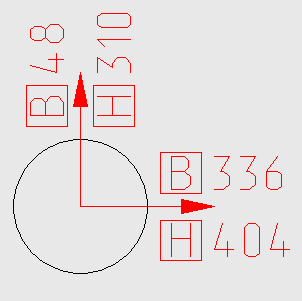

Команда: draw_gost_deflexion_be_plan
Команда: draw_gost_deflexion_be_planВычисляет смещение колон в плане от проектного положения, подписывает в соответствии ГОСТ 51872-02
Есть у меня кнопка Подпись смещения для указания смещения фактического положения от проектного, была сделана по запарке - чтобы по быстрому (в последствии немного облагороженая) всем нравилось все ясно и понятно. Пока не пришел один дяденька и не сказал - хорошо, но не по ГОСТу, у нас же приличная фирма поэтому надо по ГОСТу. И вот теперь есть кнопка которая рисует смещение по ГОСТ 51872-02
Команда: draw_gost_deflexion_be_plan
 Укажи главную ось<Enter - горизонтально>:
Укажи главную ось<Enter - горизонтально>:
 В случае если главная ось не горизонтальна можно задать две точки по главной оси. Иначе пустой ввод.
В случае если главная ось не горизонтальна можно задать две точки по главной оси. Иначе пустой ввод.
Укажите радиус колонны<5.000>:
Указывает радиус колонны. Что бы надписи не оказались поверх колонны.
Укажи проектное положение оси колонны<enter-выход>:
Указывает точку соответствующую проектному положению колонны. Пустой ввод завершение программы.
Укажи измеренное положение оси [Верха/Низа]колонны <Верх>:
Точка в фактическом положении оси колонны. Выбрав Верх или Низ указываем в каком месте колонны отклонения. Верхние отклонения над стрелочкой или левее, нижние, соответственно, ниже или левее.
Запросы на проектное и фактическое положений зациклены.
Пример результата работы кнопки.
